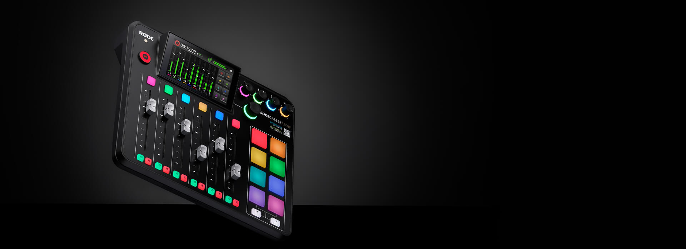

The Revolution Is Here
The RØDECaster Pro II is the world's most powerful all-in-one audio solution for streamers, podcasters, musicians, and creators. Take your content to the next level.
The RØDECaster Pro II is the world's most powerful all-in-one audio solution for streamers, podcasters, musicians, and creators. Take your content to the next level.


Experience sound like never before with the NTH-100s. Exceptional sonic performance, superior comfort and iconic looks that inspires creativity.


The NT-USB is a studio-quality USB condenser microphone that offers impeccable audio, elegant looks and premium features, all in an easy-to-use form factor, the NT-USB will have you sounding like a pro in seconds.


Give your voice that rich, broadcast sound with the PodMic. Perfect for livestreaming, voice-over, podcasting and gameplay.


The Wireless GO II is the world’s most powerful and versatile wireless microphone. With an unparalleled feature set and ultra-compact form factor, this is next generation wireless audio for every creator.

The NT-USB Mini brings pristine studio sound to a compact USB microphone, and with RØDE Connect unlocking more power, more features and more control, it’s the perfect recording solution for podcasters, gamers and streamers.

We explore the differences between XLR and USB microphones, the advantages of each and which type is best suited to your needs.

We explore the difference between large- and small-diaphragm condenser microphones, and what each is best used for.